تصميم هندسي
مجسم ثلاثي الأبعاد ورسم للأجزاء قبل التصنيع.
نظام العرض يعمل · المساعد يصيغ الطلب
Smart Vision Nexus · العراق
نصمّم المشروع وننفّذه، ونبرمج تطبيقه على أندرويد وويندوز وآيفون: من شاشة التحكم حتى التسليم.
مجسم ثلاثي الأبعاد ورسم للأجزاء قبل التصنيع.
حساسات ولوحات تقرأ الحالة ثم تتصرّف.
حركة، قرارات، وربط بالهاتف أو البطاقة.
قطع وهياكل ونماذج يصعب تشكيلها باليد.
تصميم وبرمجة لأندرويد وويندوز وآيفون.
تصميم وبرمجة لعبة لأندرويد وويندوز وآيفون.
المنشورات
الصورة هي المنشور كما يُنشر. السطر تحتها يقول لمن هو، وماذا نقدّم فيه، وماذا تطلب في الرسالة.
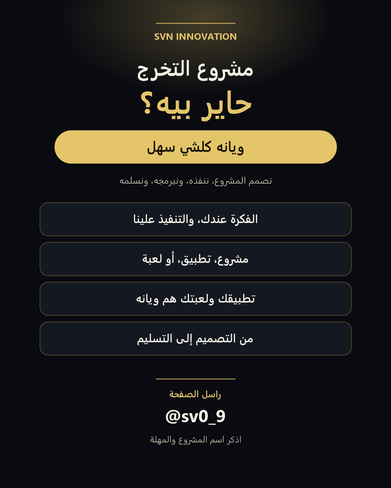
منشور الشرح
هذا المنشور للطالب الذي عنده فكرة وما يعرف من وين يبدي. الجملة الذهبية تقول: ويانه كلشي سهل. المعنى: الفكرة تبقى عنده، ونحن نصمم وننفذ ونبرمج ونسلّم.
في الرسالة يكتب اسم المشروع أو التطبيق أو اللعبة، والمهلة إن كانت محددة.
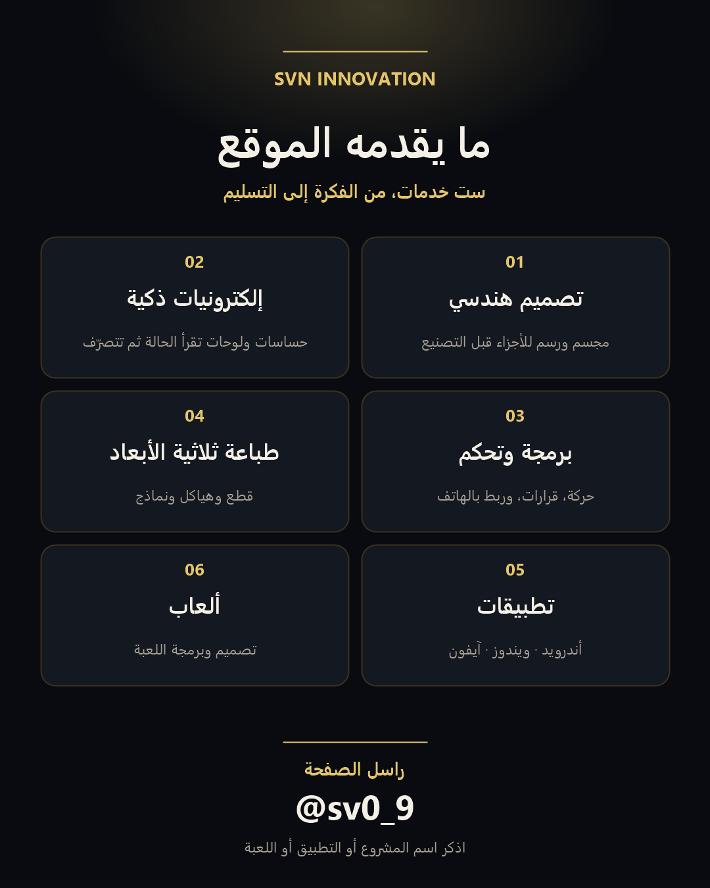
منشور الخدمات
ست خدمات، كل واحدة باسمها: تصميم هندسي، إلكترونيات ذكية، برمجة وتحكم، طباعة ثلاثية الأبعاد، تطبيقات، وألعاب.
التصميم هو رسم القطعة قبل صنعها. الإلكترونيات تقرأ الحالة وتتصرّف. البرمجة تحرّك المشروع. الطباعة تخرج القطعة. التطبيق واللعبة يشتغلان على أندرويد وويندوز وآيفون.
منشور التجسيم
كاشف اللهب مبني على التجربة المنشورة في الحساب. شاشتا مدرستي والإنجليزي، وشاشة رايفل، من البرامج نفسها. الذراع والروبوت والترس تجسيم لشكل المشروع قبل التنفيذ.
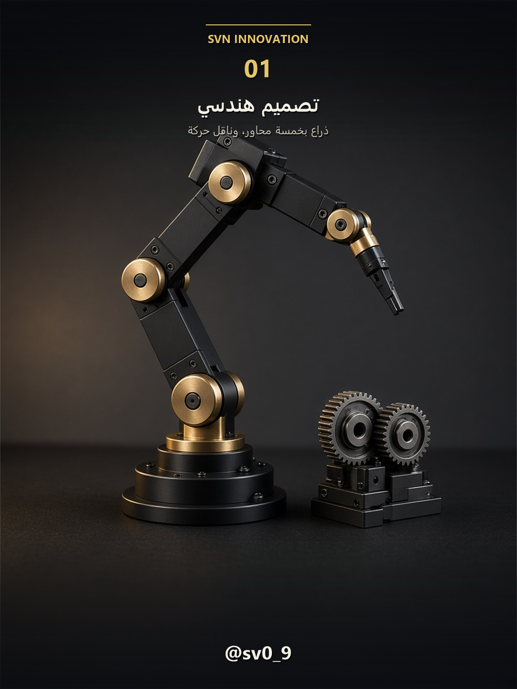
01 · تصميم هندسي
شكل المشروع قبل القص والطباعة: ذراع بمفاصل، وترسان ينقلان الحركة.
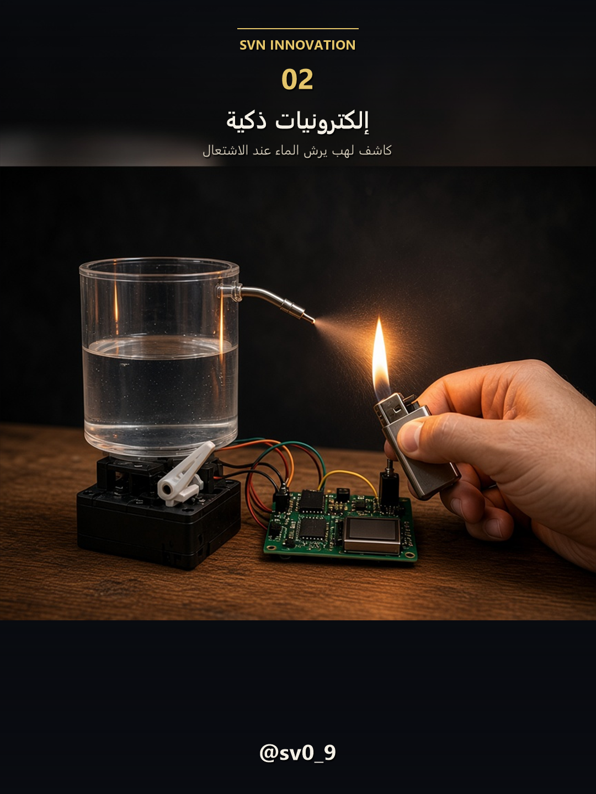
02 · إلكترونيات ذكية
الخزان يرش رذاذاً نحو اللهب عندما تلتقط اللوحة الاشتعال. هذه تجربة الحساب المنشورة.
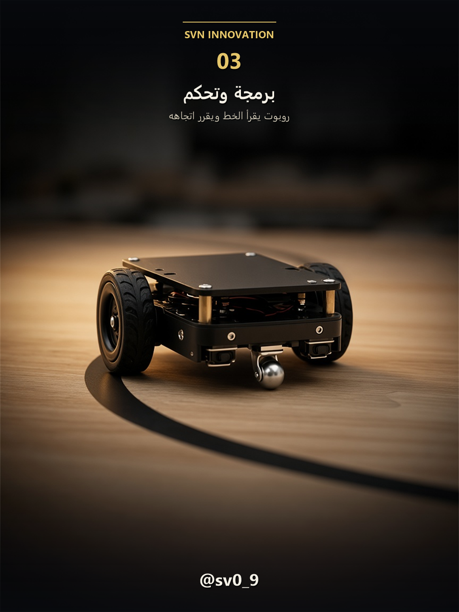
03 · برمجة وتحكم
الحساس يرى الشريط الأسود، والبرنامج يقرر أن ينعطف الروبوت معه.
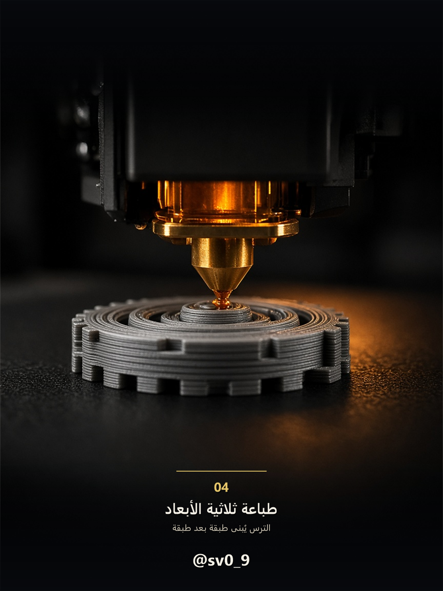
04 · طباعة ثلاثية الأبعاد
الفوهة تبني الترس من الأسفل. هكذا تخرج القطعة التي يصعب تشكيلها باليد.
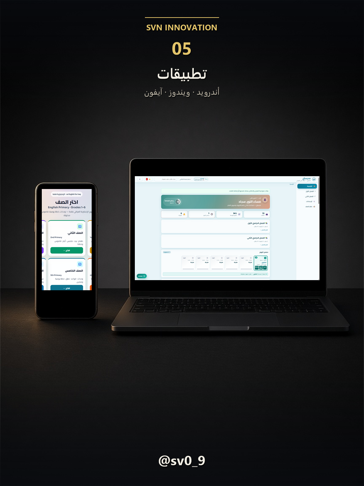
05 · تطبيقات
اللابتوب يعرض مدرستي، والهاتف يعرض إنجليزي ابتدائي. الشاشات من البرنامجين نفسيهما.
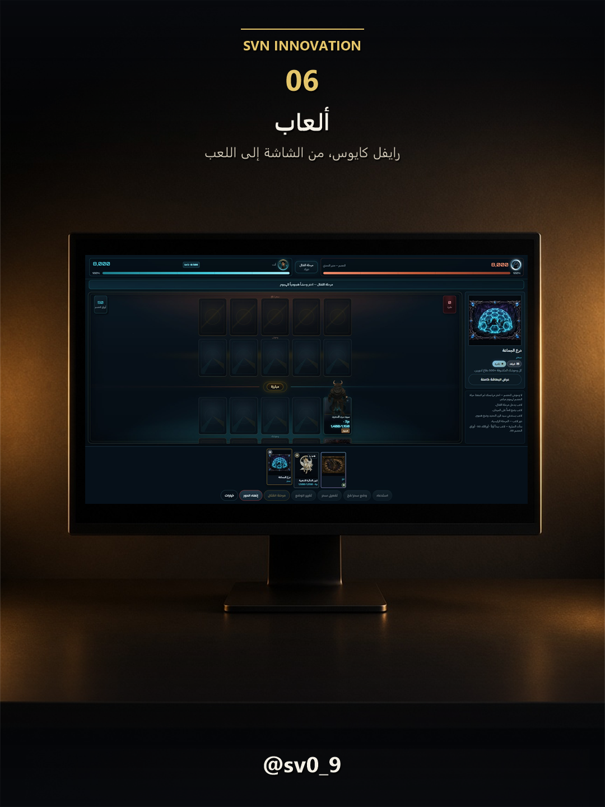
06 · ألعاب
الشاشة من داخل المباراة: بطاقات وساحة لعب. اللعبة صُممت سابقاً لأندرويد وويندوز.
تطبيقات
الشاشة تُرسم أولاً، ثم تُبرمج. التطبيق يقدر يتحكم بمشروع التخرج، أو يكون برنامجاً مستقلاً للعرض والمتابعة.
واجهة عربية للهاتف: أزرار تشغيل، قراءات الحساسات، وتنبيه عند حالة مثل اللهب أو جفاف التربة.
برنامج سطح مكتب للتجربة أمام اللجنة: لوحة بيانات، سجل القراءات، وزر تشغيل المشروع من الحاسوب.
نفس التحكم والعرض بمقاس شاشة آيفون: الصفحة الرئيسية للمشروع، والحالة، وآخر قراءة.
إعلان
فيديو 45 ثانية عما تقدمه الصفحة: مشاريع التخرج، وبرمجة التطبيقات، وتصميم الألعاب.
ألعاب وأعمال سابقة
كل بطاقة عمل سابق، والصورة من برنامجه نفسه. اضغط الصورة لتكبيرها. رايفل لأندرويد وويندوز. بيانات مدرستي في الصورة نموذجية للعرض.
لعبة
لعبة بطاقات صُممت سابقاً. الصورة الأولى القائمة، والثانية ساحة القتال. النظام: أندرويد وويندوز.
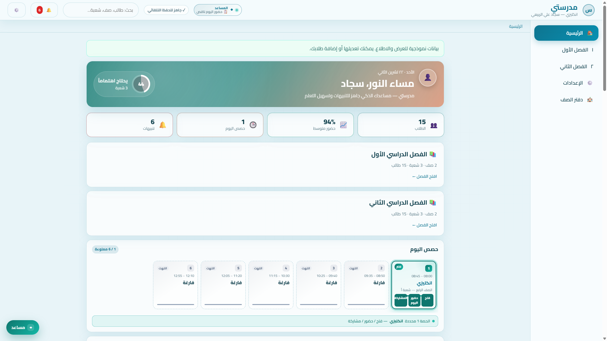
تطبيق
تطبيق للمعلم: صفوف، حضور، ودرجات. الأرقام والأسماء في الصورة نموذجية وليست بيانات طلاب حقيقيين.
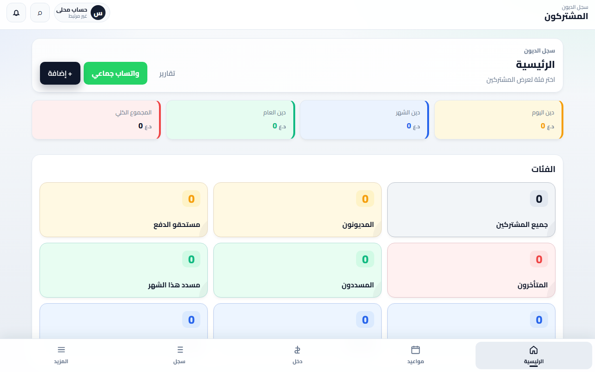
تطبيق
برنامج على ويندوز لمتابعة الديون: اليوم، الشهر، المسدد، والمتأخر. الصورة من أول تشغيل والصفحة فاضية.
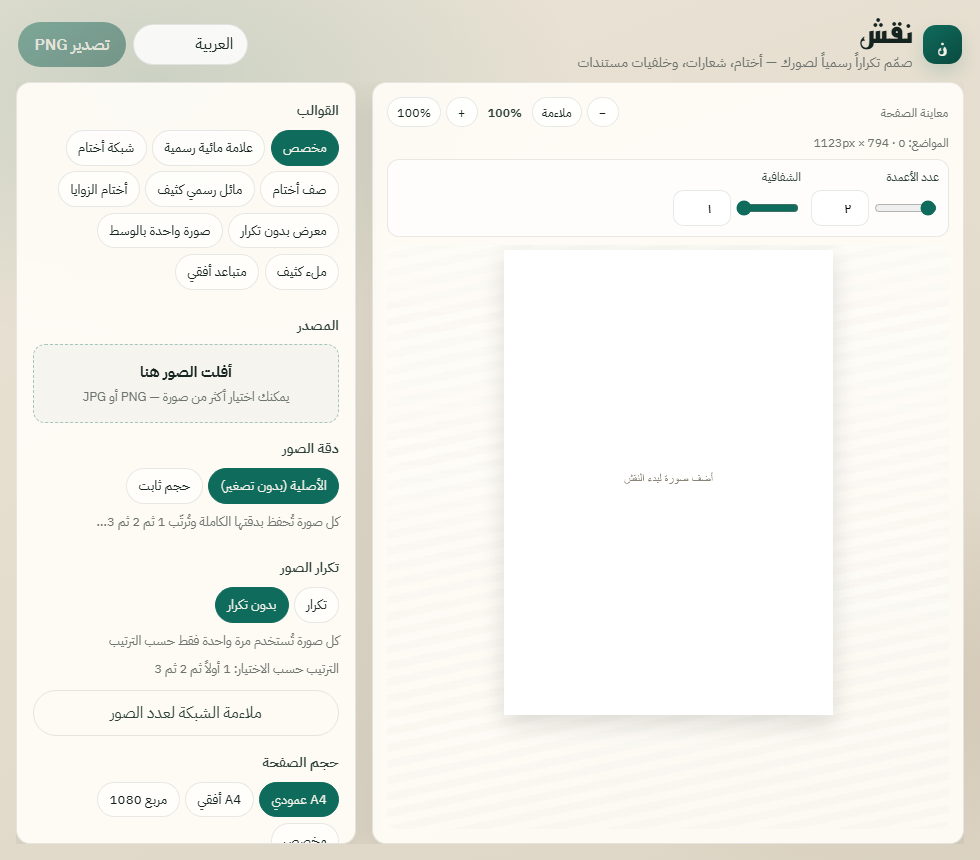
تطبيق
تطبيق يكرر صورة لختم أو خلفية أو شعار، ثم يصدّرها PNG. الصورة من شاشة التصميم.
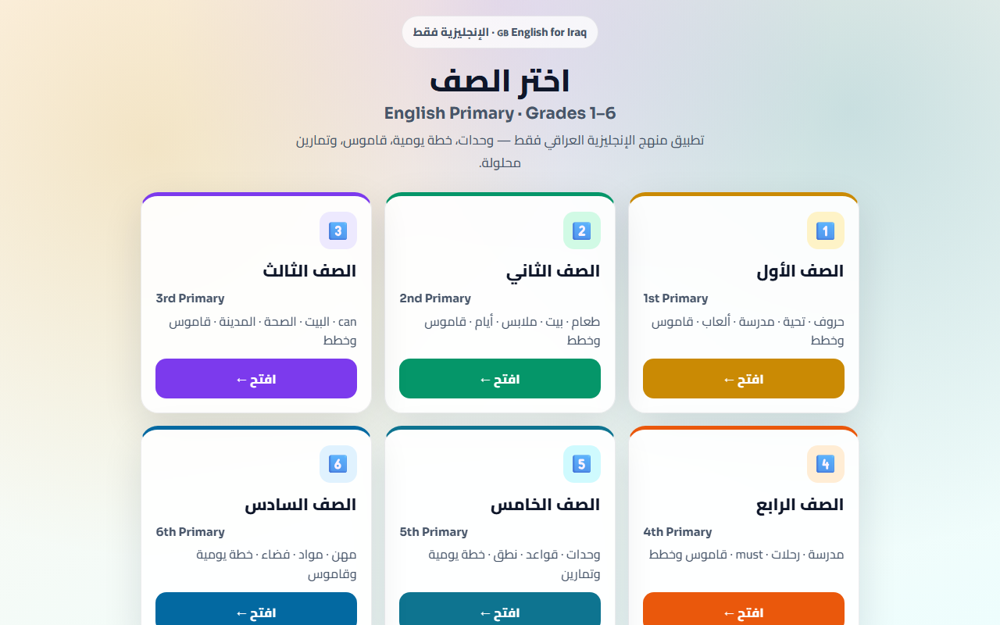
تطبيق
تطبيق لصفوف الأول حتى السادس: وحدات، خطة يومية، وقاموس. الصورة من اختيار الصف.
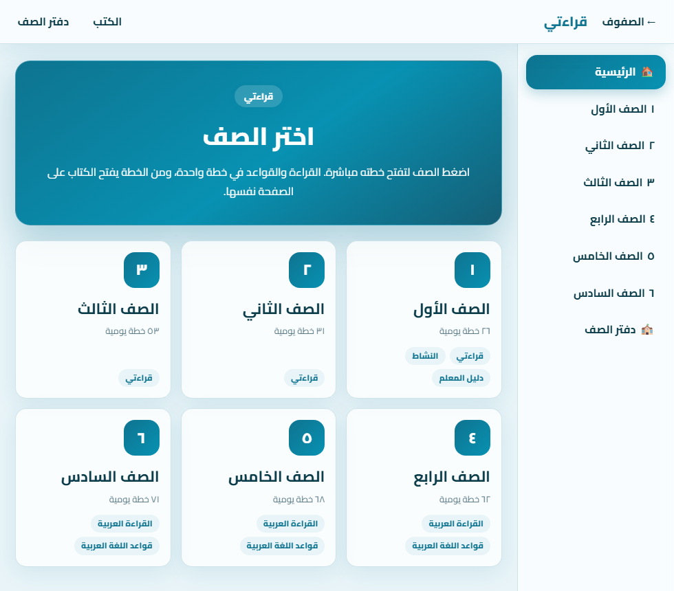
تطبيق
خطط قراءة يومية للصفوف الستة، مع القراءة وقواعد اللغة. الصورة من اختيار الصف.
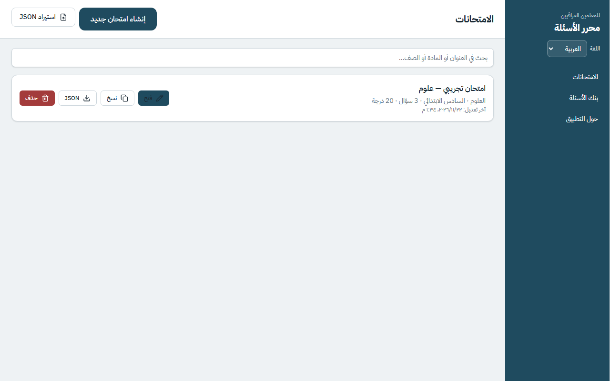
تطبيق
برنامج يجهّز ورقة الامتحان من بنك الأسئلة، ثم فتحها أو نسخها أو تصديرها.
01 — مشاريع بسيطة
كل فيديو يوضّح حركة مشروع صغير. كاشف اللهب مبني على التجربة المنشورة. بقية المقاطع تصور للشكل والحركة، وليست تصويراً من الهاتف. تحتها ثلاث حركات مرسومة لأفكار أكبر، وزر «تشغيل» يحرّك الرسم.
ترى روبوتاً بعجلتين يمشي مع شريط أسود وينعطف معه. هذا أول مشروع لمن يريد حركة وبرمجة بسيطة.
ترى مضخة تقطّر الماء على التربة. المشروع: حساس رطوبة يشغّل المضخة عندما تجف النبتة.
ترى الخزان يرش رذاذاً نحو اللهب. هذا تصور مبني على التجربة المنشورة في الحساب.
ترى بطاقة تُقرَّب من القارئ ثم تُفتح السقاطة. المشروع: الباب لا يفتح إلا بالبطاقة المطابقة.
ترى صندوقاً يقطع السير من طرف إلى طرف. المشروع نموذج لنقل قطعة بين محطتين.
ترى الذراع ترتفع ثم تعود. المشروع: حاجز يفتح للمرور ويغلق بعده بمحرك صغير.
القاعدة ثابتة، والساعد يمسح فوق الطاولة ثم يعود.
النوافذ تضيء بالتناوب كأن الأمر جاء من الهاتف.
الرأس يمرّ، والطبقات تظهر من الأسفل إلى الأعلى.
02 — لوحات التصميم
كل بطاقة شكل مبدئي للفكرة، ليست صورة مشروع مُسلَّم. «من المنشور» فكرة مذكورة في منشور أفكار التخرج. «مقترح» فكرة على نفس الخط ولم تُبنَ بعد. التنفيذ يبدأ بعد المراسلة.
03 — من اللوحة إلى التسليم
نحوّل الطلب إلى مشروع تخرّج واضح الحدود.
مجسم ثلاثي الأبعاد ورسم هندسي للأجزاء.
طباعة وتجميع الميكانيك والإلكترونيات.
المتحكم، وتطبيق أو لعبة لأندرويد أو ويندوز أو آيفون إن طُلب.
نجرّب المشروع ثم نسلّمه، مع دعم وضمان على العمل.
مساعد الطلب
اختر النوع والنظام، واكتب الاسم والمهلة. المساعد يركّب النص جاهزاً، ثم تنسخه أو ترسله للصفحة.
الرسالة الجاهزة
تواصل
اذكر اسم المشروع أو التطبيق أو اللعبة، والنظام: أندرويد، ويندوز، أو آيفون، والمهلة إن كانت محددة.